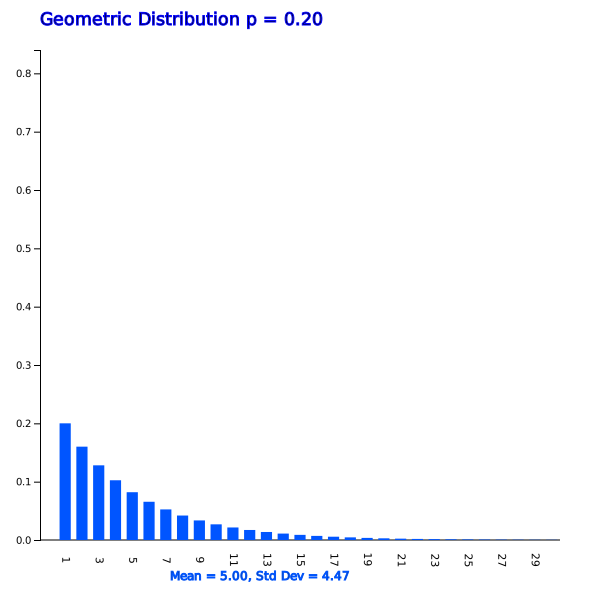

Chapter 5. Probability Distribution
5.3.3 Geometric Distribution
[presentation] [video]
The probability of success \(p\) in the geometrical distribution is called a parameter of the geometric distribution. The probability distribution function of the geometric distribution is as follows:
When the probability of 'success' in a Bernoulli trial is \(p\) and \(X\) is the number of Bernoulli trials until the first success, the probability distribution of \(X\) is called a geometric distribution and its probability distribution function is as follows. $$ f(x) = (1-p)^{x-1} p, \qquad x=1,2, ... $$
The expectation and variance of the geometric random variable are as follows. $$ E(X) = \frac {1}{p}, \quad V(X) = \frac {1-p}{p^2 } $$
|

<Figure 5.3.13> Geometric distribution when \(p\) = 0.2
|


Answer
Let \(\small X\) be the geometric random variable with \(p\) = 0.4.
1) \(\small P(X = 1) = f(1) = \small (1-0.4)^{1-1} 0.4 \) = 0.4
2) \(\small P(X = 5) = f(5) = \small (1-0.4)^{5-1} 0.4 \) = 0.0518
Answer
|
Select 'Geometric Distribution' from the 『eStatU』 menu, select parameter \(p\) = 0.05, and click the [Execute] button to display the graph shown in <Figure 5.3.16>, and click the [Geometric Prob Table] button to display Table 5.3.8.
<Figure 5.3.16> Geometric distribution when \(p\) = 0.05
|

| \(p\) = 0.05 | |||
|---|---|---|---|
| \(x\) | \(\small P(X = x)\) | \(\small P(X \le x)\) | \(\small P(X \ge x)\) |
| 1 | 0.0500 | 0.0500 | 1.0000 |
| 2 | 0.0475 | 0.0975 | 0.9500 |
| 3 | 0.0451 | 0.1426 | 0.9025 |
| 4 | 0.0429 | 0.1855 | 0.8574 |
| 5 | 0.0407 | 0.2262 | 0.8145 |
| \(\cdots\) | \(\cdots\) | \(\cdots\) | \(\cdots\) |
1) We can easily find \(\small P(X=3)\) = 0.0451.
2) We can easily find \(\small P(X \ge 3)\) = 0.9025.
\(\qquad \small P(X \ge 3) = 1 - P( X \le 2)\) = 1 – 0.0975 = 0.9025
|
Practice 5.3.4
The defect rate of products produced in a factory is about 1 percent. Use 『eStatU』 to obtain the following probabilities when continuing to inspect the product until it finds a defective product to investigate the cause of defective.
1) The probability of finding a defective product at the second trial.
2) The probability of finding a defective product at the third or more trial.
|